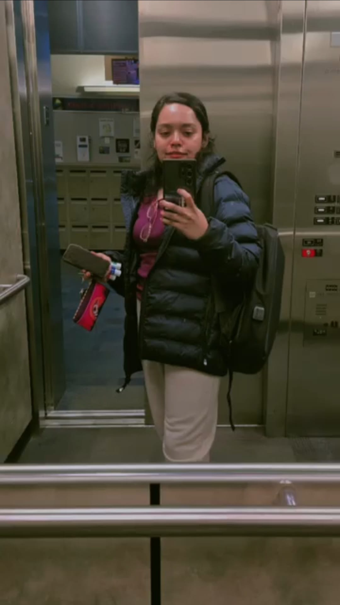

My teaching and service work centers on helping students build practical programming confidence, mentoring junior researchers and competitive programmers, and organizing inclusive technical communities.
01
Teaching experience

FIG. 02University of Victoria
University of Victoria
Fall 2025–Spring 2026
Teaching Assistant — CSC 111: Fundamentals of Programming with Engineering Applications
Supported more than 50 undergraduate students in an introductory programming course designed for engineering applications.
Instruction
Conducted two lab sections per week in Fall 2025 and 2.5 lab sections per week in Spring 2026.
Assessment
Graded lab work, midterm examinations, and final examinations.
Student support
Held office hours, explained core programming concepts, and assisted with exam invigilation.
Preparation
Completed UVic privacy, information-security, records-management, and CSC teaching-support training.
02
Mentoring
Research methodology and feature engineering
Mentored participants in a workshop covering research methodology and feature engineering for machine-learning projects.
Competitive programming
Mentored and supervised junior students through the CUET Competitive Programming Workshop and related club activities.
03
Leadership and service
2023–2024
Vice President, CUET Computer Club
Led the organization of a national inter-university programming contest; coordinated programming and machine-learning workshops, a web-development seminar, two intra-university contests, and industry recruitment activities.
8th place in Sentiment Analysis of Code-Mixed Text and 7th place in Multimodal Sentiment Analysis at the 2nd International Workshop on Computational Linguistics & Bangla Language Processing, 2023.
9th at EDU Inter University Programming Contest (2020), 21st at USTC Programming Contest (2020), and 4th at CUET Intra University Programming Contest (2019).